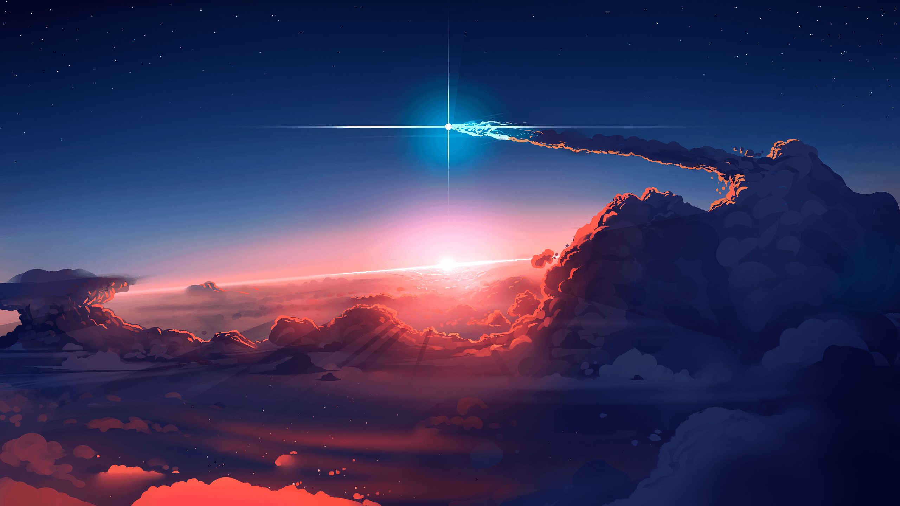
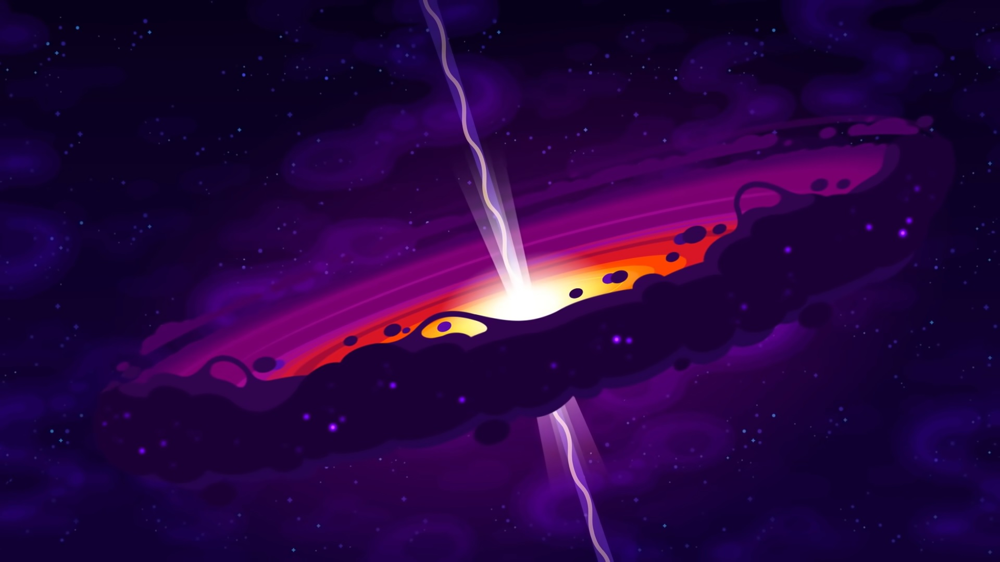

FEDORA
Curated keyboard-driven workstation on clean Fedora.
The unyielding stability of a clean Fedora Minimal netinstall meets the muscle-memory ergonomics of Pop!_OS COSMIC keybindings, the fluid Wayland animations of Hyprland, a reactive Quickshell status bar, the ambient craft of IdleScreen screensavers, and instant Btrfs snapshot rollbacks. Installed via 10 idempotent modules in one single command.
curl -fsSL https://superfedora.github.io/install.sh | bash
Why SuperFedora?
Linux ricing is often trapped between two extremes: heavy stock desktop environments with mouse-centric workflows, or fragile custom distros that force full drive wipes and break on upstream updates. SuperFedora hits the golden 16-bit sweet spot.
The Default Way
- Solid RPM & kernel foundation, but mouse-heavy GNOME default.
- No keyboard-driven tiling or COSMIC stack navigation.
- No automated pre-install Snapper baseline snapshot.
- Missing essential multimedia codecs and VA-API hardware drivers out of the box.
- Requires hours of manual hunting across RPM Fusion and COPRs.
The Fragile Way
- Demands wiping your entire drive with opinionated partitions.
- Locked to Arch Linux AUR churn with high maintenance breakage.
- Hundreds of esoteric keybindings that break your existing muscle memory.
- No idempotent re-run or safe component rollback capability.
- Brittle shell coupling that fails when configs drift.
The 16-Bit Supercharged Way
- Clean Fedora Minimal netinstall foundation — enterprise stability.
- Pop!_OS COSMIC keybinding muscle memory (Super+T, Super+B, Super+S).
- Automatic Btrfs Snapper baseline snapshot — 100% reversible anytime.
- 10 Idempotent modules: checks before installing, runs safely repeatedly.
- IdleScreen screensaver suite integrated with zero cycles active.
- Complete polyglot dev stack: Rust, Node, Python uv, GCC, Git & AI CLIs.
Modular Workstation Architecture
SuperFedora installs through 10 ordered, completely idempotent modules (00 through 90).
Every module inspects the system first and applies only missing packages or configuration changes. Click any module below to inspect its exact package manifests and managed configs.
Pop!_OS COSMIC Keybinding Matrix
Never learn a bizarre, alien shortcut layout. SuperFedora mirrors the intuitive, muscle-memory keybindings from Pop!_OS COSMIC. Use the live search box or category filter below, or press Super + F1 on the desktop for the live searchable HUD.
CLI Command Control Center
Everything is orchestrated through the lightweight superfedora binary.
Inspect real-time health, run dry-run simulations, check for config drift, or trigger a full baseline rollback. Select a command to preview its live terminal output:
Loading CLI simulator...Installation & Rollback Guarantee
Install cleanly from a fresh Fedora netinstall, or run it over an existing Fedora Workstation or Server.
Fedora Minimal Netinstall
Download the official Fedora Everything netinstall ISO. Under Software Selection, choose Minimal Install and create your user account with administrator privileges.
One-Line Bootstrap
Log into your console and execute the bootstrap script:
curl -fsSL https://superfedora.github.io/install.sh | bashThis takes a Snapper baseline snapshot (#1) and runs modules 00 through 90 automatically.
Reboot & Enjoy
Reboot your machine. Enter your password at the retro tuigreet login prompt. Hyprland starts automatically with Quickshell, Tokyo Night theme, and Pop!_OS COSMIC shortcuts.
🛡️ The Zero-Risk Snapper Rollback Guarantee
Before changing a single package or config file, SuperFedora executes 00-preflight to create an immutable Btrfs snapshot baseline labeled superfedora-preinstall-baseline.
If you ever want to revert your machine to the exact state it was in before SuperFedora ran, simply execute superfedora rollback.
Curated 16-Bit Wallpapers
Handcrafted 16-bit retro wallpapers indexed with authentic SNES and Tokyo Night color palettes. Bundled into SuperFedora and ready to download individually or as a package:






SuperFedora Organization Repositories
Explore and contribute across the @SuperFedora repositories:
Core workstation monorepo: CLI orchestrator, 10 idempotent installer modules, package lists, dotfiles, and CI test pipeline.
VIEW REPOSITORY →
The 16-bit interactive documentation portal, Pop!_OS COSMIC matrix, and edge-cached install.sh bootstrap CDN endpoint.
16-bit pixel avatars, metallic Super Metroid 3D typography, vector branding assets, and curated retro desktop wallpapers.
VIEW REPOSITORY →Organization profile, community health standards, and shared configuration files for the SuperFedora project.
VIEW REPOSITORY →